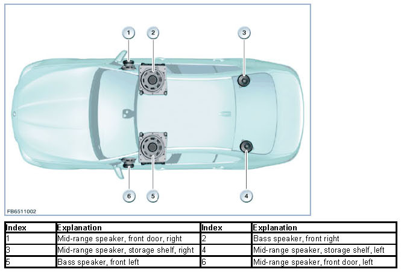
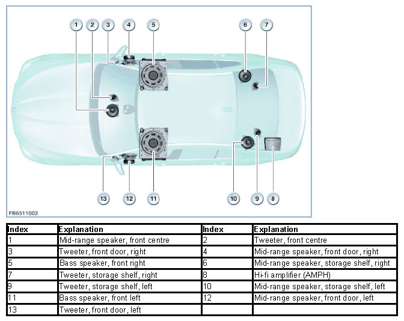
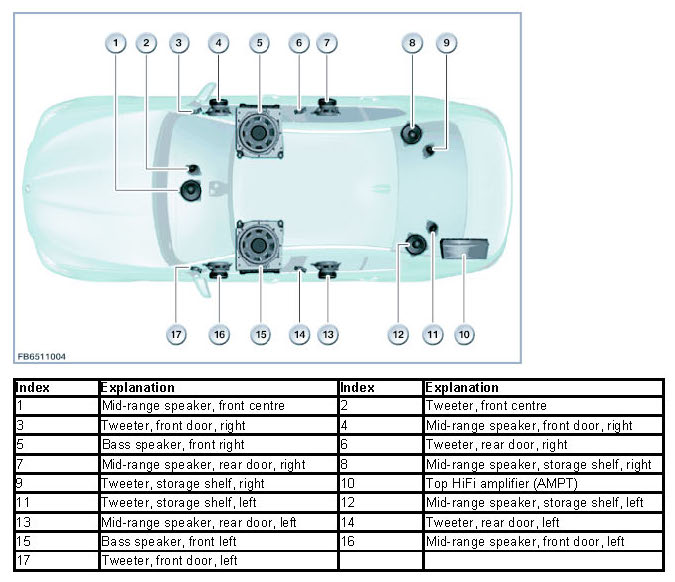
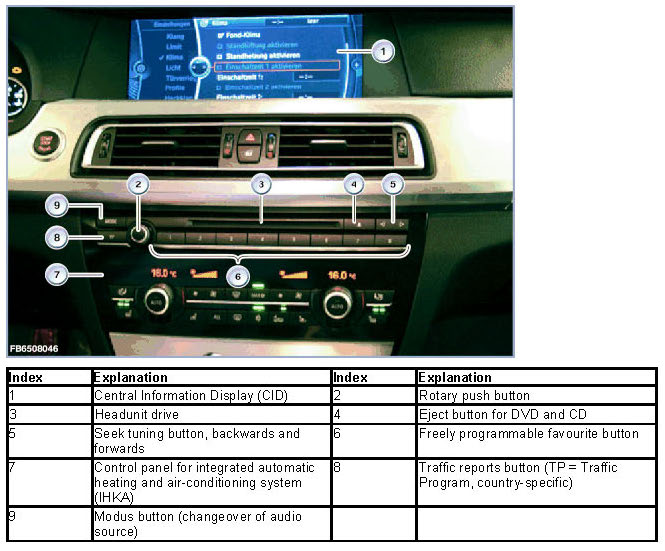
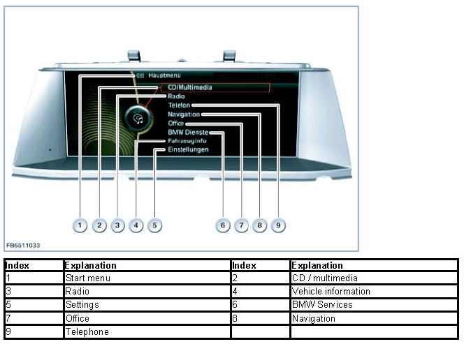
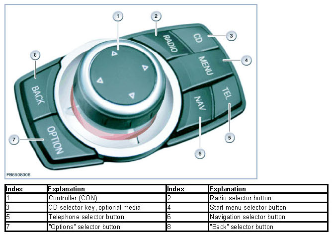
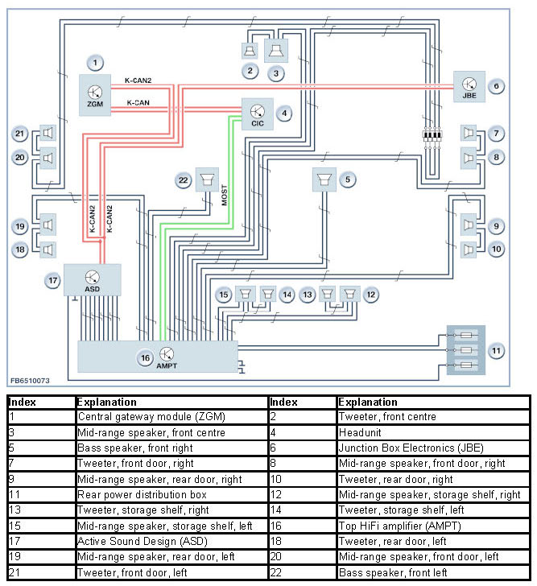

Audio Amplifier (Hi-Fi, Top HiFi)
Audio Amplifier
Audio amplifier
Audio playback can be optimized using 2 audio amplifiers:
- Hi-fi amplifier (AMPH)
- Top HiFi amplifier (AMPT)
For F10, for example, the following 3 speaker systems are available:
- Stereo system (standard equipment) with 6 speakers

- Hi-fi system with 12 speakers

- Top HiFi system with 16 speakers

The active frequency diplexers transmit to the audio amplifier only that frequency range that can be effectively reproduced by the connected speaker. The mid-range speakers and the bass speakers are connected to this audio amplifier. The tweeters are passively connected to the mid-range speakers.
Brief component description
The following components relevant for the Top HiFi amplifier (AMPT) are described:
- Top HiFi amplifier (AMPT)
- Headunit
- Central Information Display (CID)
- Controller (CON)
Top HiFi amplifier
Top HiFi amplifiers are audio amplifiers with partially active frequency diplexers. Active frequency diplexers achieve better acoustic results than passive frequency diplexers.
The Top Hi-Fi amplifier (AMPT) is a control unit on the MOST network which has the following functions:
- Audio amplifier for tweeters and mid-range speakers 4 x 40 watts (alternatively 8 x 45 watts)
- Audio amplifier for bass speakers 2 x 70 watts (alternatively 2 x 125 watts)
- Vehicle-specific equalizing
- Speed-dependent equalizing
- Volume-dependent equalizing
Headunit
In principle, the structure of the headunit corresponds to that of a personal computer. Like a personal computer, the headunit contains the following components:
- Processor
- Main memory
- Hard disk
- Fan
The hard disk in the headunit is used to store the application software and other data.
The following applications are installed on the hard disk:
- Music library
The music collection is based on the audio data stored on the integrated hard disk.
- Music track database
Software for track search with the help of a database for music tracks (Gracenote (R)).
- Navigation system (map data) and software (application software)
Full screen display possible: Zoomable assistance window with map view, journey planner, map data storage on the hard disk.
- Voice processing system
- Contacts (database of addresses)
The data is used for telephone and navigation, for example.
The headunit is the central control unit for the listed applications. For the purposes of picture signal transmission, the headunit is linked to the Central Information Display (CID). The headunit is also connected to the controller (CON). The controller (CON) is the control panel of the central information display (CID).
The following graphic shows the headunit with central information display (CID) on F01.

Central information display (CID)
The central information display (CID) has different dimensions depending on the specific model and vehicle equipment.
The main menus are arranged for selection in linear manner in lists. The submenus are also placed horizontally one above the other.

The functions surround sound and the user-programmable equalizer for the audio amplifier are operated from the central information display (CID).
Controller (CON)
There are 7 fixed selector keys around the controller (CON). These 7 selector keys now enable selection of half of all the submenus.
The following submenus can still be selected only from the main menu:
- Contacts
- BMW Services
- Vehicle information
- Settings

When pressed, the "Back" button returns the user to the last screen mask.
The "Option" button enables other settings in the last selected submenu.
System overview
The following graphic shows an example of a system overview of a Top HiFi system.

System functions
The following system functions are described for the Top HiFi amplifier (AMPT):
- Electronic power-up
- Electronic power-down
- Undervoltage cutout
- Speed-dependent equalizing
- Surround sound function
Electronic power-up
The audio amplifier is connected to "terminal 30" and GND for voltage supply. The audio amplifier is woken up using the MOST bus.
The audio amplifier is active under the following preconditions:
- Control input identifies voltage greater than 9 volts
- Input "terminal 30" detects voltage in excess of the voltage at the control input
Electronic power-down
The audio amplifier is connected to "terminal 30" and GND for voltage supply. The audio amplifier works in an operating voltage range of 9 to 16 volts (alternatively from 7.5 to 16 volts) at the control input.
If the voltage at the control input is lower than 9 volts (alternatively lower than 7.5 volts), the audio amplifier is automatically switched off. This ensures that the audio amplifier does not remain switched on, for example in a parked vehicle.
Undervoltage cutout
As soon as the voltage falls below the operating voltage range, for example during engine start, the audio amplifier is automatically switched off.
Once the switch-on conditions are satisfied, the audio amplifier is automatically switched on again.
Speed-dependent equalizing
In conjunction with the Top Hi-Fi amplifier (AMPT) optional equipment, the headunit provides the 7 band equalizing function.
Depending on the speed signal, the volume of a set tone frequency range is increased in order to counteract noise caused by the vehicle acoustics when the vehicle is in motion. Adaptation is mainly performed in the low audio frequency range.
Surround sound function
The Top Hi-Fi amplifier (AMPT) features a surround sound function which enables improved space acoustics. The surround sound function is particularly effective in the case of "pure" sound storage (for example in CD mode). The surround sound function is active after "terminal R" has been switched on. Switch-off can be effected via the controller (CON).
NOTICE: Surround sound functions are not recommended under certain circumstances.
The surround sound function is not recommended for predominantly voice reproduction or poor radio reception.
We can assume no liability for printing errors or inaccuracies in this document and reserve the right to introduce technical modifications at any time.